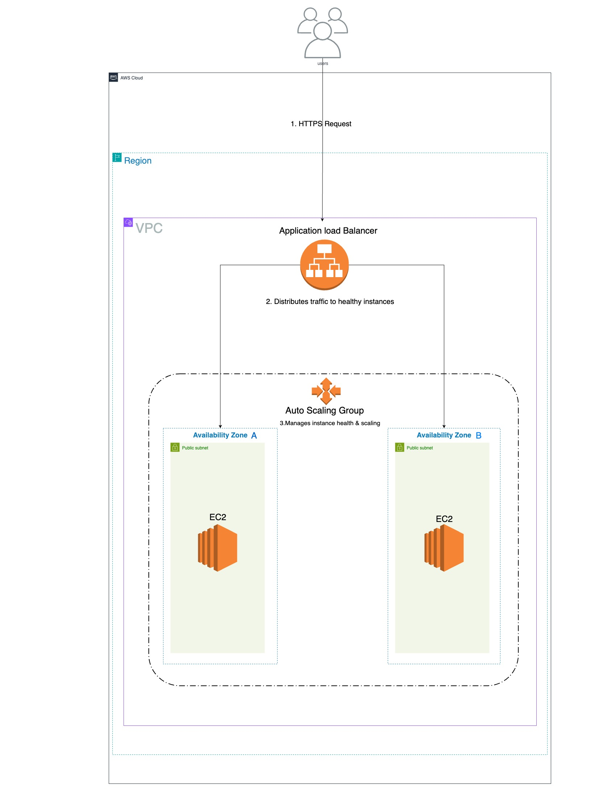

Project 2: Highly Available & Scalable Web Application
A classic three-tier architecture deployed with AWS Elastic Beanstalk to ensure resilience and automatic scaling.
The Goal
The goal was to deploy a web application that could automatically scale to handle traffic spikes and self-heal from an instance failure. This required an architecture with no single point of failure, mirroring a real-world production environment.
The Architecture
I used AWS Elastic Beanstalk to orchestrate the creation of a classic, fault-tolerant web environment. The diagram below shows the final architecture.
Key components include:
- Application Load Balancer (ALB): Distributes incoming traffic across multiple Availability Zones to prevent any single server from being overwhelmed.
- Auto Scaling Group (ASG): Manages the EC2 instances, automatically adding more instances during traffic spikes (scaling out) and replacing any instances that fail health checks (self-healing).
- Multi-AZ EC2 Instances: The application runs on instances in at least two different Availability Zones, ensuring the application can survive a data center outage.
The Test: Simulating a Failure
After the environment was deployed, I performed a resilience test by manually terminating the active EC2 instance. The Auto Scaling Group immediately detected the failure, and within minutes, automatically provisioned a new, healthy instance to take its place, proving the self-healing capability of the architecture.